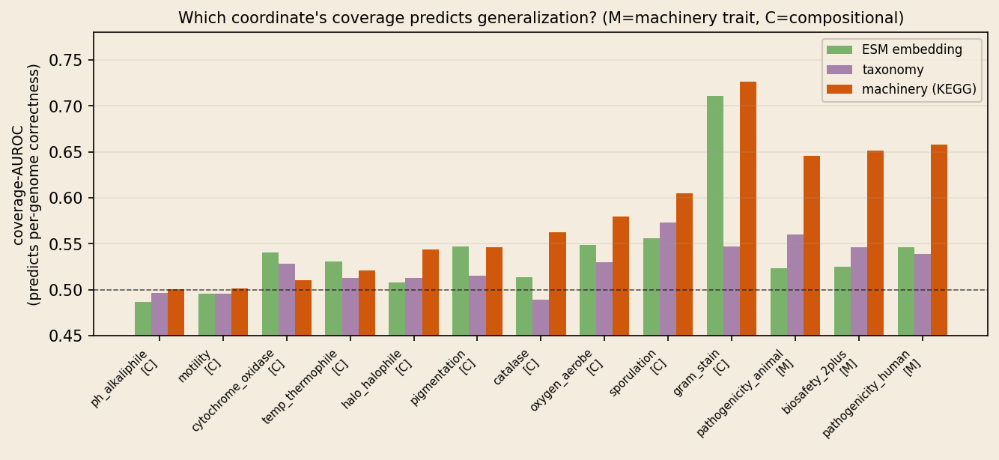
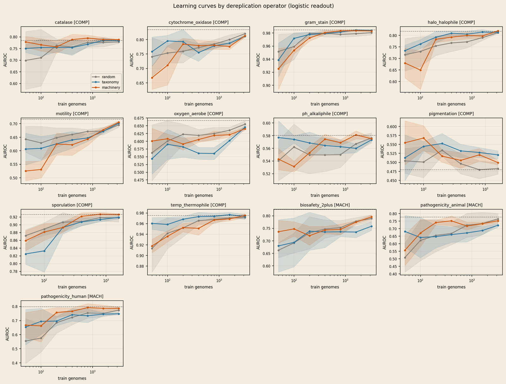
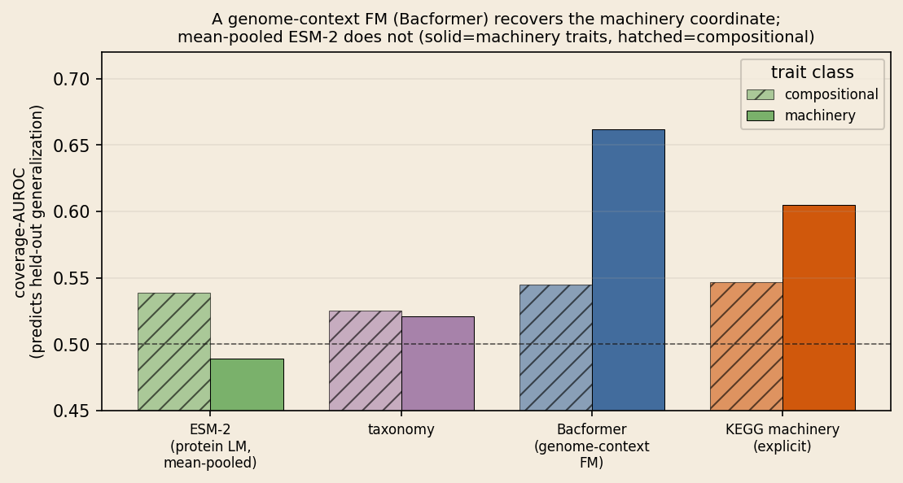
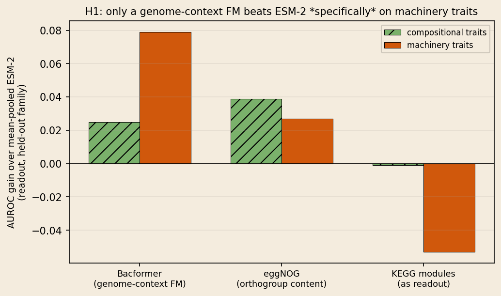

Machinery Space is the Right Coordinate for Biological Coverage: Diagnosing the Compositional Ceiling in Genomic Foundation Models
Coverage really does limit genomic foundation models, but the field has been measuring it in the wrong coordinate. For gene-localized traits, proximity in machinery space (KEGG pathway content) predicts held-out generalization; proximity in embedding space or taxonomy does not.
Abstract
Foundation models of protein and genome sequence plateau on function and phenotype prediction: added data yields vanishing returns, and simple linear or evolutionary baselines match billion-parameter encoders. A natural diagnosis, advanced by recent work, is that generalization is coverage-limited: held-out lineages fall where no labelled training neighbour exists. We agree coverage binds, but show the field has been measuring coverage in the wrong coordinate system. For held-out bacterial families we ask which notion of "closeness to the training set" actually predicts whether a model generalizes: closeness in the foundation model's own embedding space, in taxonomy, or in machinery space, the space of metabolic pathway content (KEGG modules).
On thousands of genomes we find a sharp trait-class by coordinate interaction. For machinery-localized traits (pathogenicity, biosafety level), machinery-space proximity predicts per-genome generalization at AUROC 0.652, whereas embedding-space (0.531) and taxonomy (0.548) proximity sit near chance; for compositional traits no coordinate is strongly predictive. A pre-registered control rules out that machinery space is merely a taxonomy proxy. The coordinate is not an artifact of a hand-built ontology: a learned genome-context foundation model (Bacformer) recovers it while mean-pooled ESM-2 does not, localizing the failure to gene-content-destroying pooling rather than to foundation models as such. The corrective is not more taxa but coverage measured in machinery space.
The compositional ceiling
Neural scaling laws promise that loss falls as a power law in data and model size, and biological foundation models, protein language models such as ESM-2 and genome models such as Evo 2, were expected to inherit it. On function and phenotype prediction they largely do not: added pre-training data gives diminishing or absent returns, simple evolutionary or linear baselines match far larger models, and single-cell foundation models neither beat simple baselines nor improve when their pre-training data is made more diverse. We call this saturation a compositional ceiling.
Coverage, but in which coordinate?
A prominent diagnosis is that the bottleneck is coverage in the model's representation space: held-out lineages land in regions sparsely populated by labelled examples, so there is no reliable neighbour to transfer from. The diagnosis is appealing but, as stated, non-actionable: it does not say in what space coverage should be measured. The diversity operators used to attack the problem quietly assume an answer. Genome dereplication and taxonomy-aware cross-validation work in taxonomy space; the single-cell diversity studies work in transcriptomic space. All are compositional coordinates.
We argue the correct coordinate is machinery space: the presence and completeness of metabolic pathway modules. The intuition is that phylogenetic redundancy, the same machinery re-sampled across related lineages, is low-rank and linearly recoverable, so it does not stress a nonlinear model, whereas the residual signal that governs hard phenotypes is organized by mechanism, not by taxonomy. For a held-out genome we define its coverage in a coordinate as the maximum cosine similarity to any training genome, and ask which coordinate's coverage predicts whether the readout classifies that genome correctly.
Machinery space is the coordinate of coverage
This is the central finding. For machinery traits, machinery-space coverage predicts per-genome generalization at AUROC 0.652, while embedding-space (0.531) and taxonomy (0.548) coverage sit at chance; per-trait bootstrap intervals for machinery coverage exclude both 0.5 and the embedding and taxonomy values. For compositional traits the three coordinates are similar and only weakly predictive (0.560 vs 0.544). The taxonomy-coverage control is decisive: were machinery space a taxonomy proxy, taxonomy coverage would carry the same signal; it does not. This localizes why the "coverage-limited" diagnosis resisted fixes. Coverage was measured in embedding space, which is blind to machinery-trait generalization.

Not taxonomy in disguise
Because KEGG content is partly vertically inherited, taxonomy- and machinery-space dereplication could coincide. They do not. Machinery (cosine) distance is only weakly related to taxonomic rank distance (Spearman rho = 0.20); a taxonomy bucket explains just 4.2% of machinery-distance variance; the two orderings select largely different genomes (mean Jaccard 0.12). Crucially, machinery-space dereplication covers fewer families than taxonomy-space at every budget, so no downstream machinery effect can be attributed to broader taxonomic coverage.
A ceiling, and a taxonomy penalty
The sampling view tells a complementary story. On compositional traits all three diversity operators (random, taxonomy-dereplication, machinery-dereplication) reach the same plateau at the same small budget, the compositional ceiling, reproducing the single-cell diversity null in genomes. On machinery traits, maximizing taxonomic diversity hurts: taxonomy-space dereplication costs 0.033 AUROC relative to random selection, versus +0.004 on compositional traits. We report plainly that machinery-space dereplication does not dramatically out-climb random selection under multi-seed evaluation, an earlier few-seed signal did not survive, so we frame the operator result as a taxonomy penalty on mechanism rather than a machinery-diversity windfall. The robust, actionable claim is the coordinate diagnosis above: re-sampling data is not the lever.

A foundation model recovers the coordinate
The main result uses mean-pooled ESM-2 as the embedding coordinate and finds it near chance for machinery traits. Is that a property of foundation models in general, or of mean-pooling a protein language model, an operation that averages away gene content, the very thing machinery depends on? We repeat the coverage analysis with a fourth coordinate: Bacformer, a foundation model that represents proteins in genomic context (gene order and content). For machinery traits, Bacformer-space proximity predicts generalization at 0.662, as well as explicit KEGG pathways (0.605) and far above mean-pooled ESM-2 (0.489, below chance). The machinery coordinate is thus not specific to a hand-built pathway ontology: a learned genome-context representation recovers it, provided it does not discard gene content by pooling.

Representation, not sampling
The coverage analysis is diagnostic; can it be turned into a better model? The failed operator result says re-sampling training data is not the lever; the Bacformer coverage result says the representation is. Testing this directly gives a three-part answer. (i) Bacformer beats mean-pooled ESM-2 specifically on machinery traits: +0.079 AUROC on machinery versus +0.025 on compositional (interaction +0.054), with significant per-trait gains on pathogenicity (human +0.108, animal +0.092). (ii) Raw orthogroup content (eggNOG) improves the readout broadly (+0.03 to +0.04 on both classes) but shows no interaction: gene content helps everywhere, not machinery-specifically. (iii) KEGG module completeness is a good coverage coordinate but a poor readout (0.053 worse on machinery traits): metabolic-module similarity indicates whether a genome's function is covered by training, yet is too coarse to predict pathogenicity, which is not itself a metabolic module. The coverage coordinate and the readout representation play different roles, and only a learned genome-context model fills both.

What it means
The results recast a widely reported failure. "Biology breaks foundation models" is a statement about which axis one samples. Compositional diversity, more taxa, cells, or metadata strata, cannot restore a scaling law, because the redundancy it fails to remove is mechanistic; and coverage, the correct diagnosis, is only actionable once measured in the right coordinate. Machinery space is that coordinate: it is where held-out generalization on hard, gene-localized phenotypes is predictable, and where taxonomy-driven diversity operators go wrong by discarding the within-clade replication those phenotypes rely on.
Because our operators only re-weight observational genomes, they can remove redundancy but not add mechanism. The natural next step is data that varies mechanism while holding composition fixed, exactly what the coordinate analysis says is scarce: perturbation data (Tn-seq, CRISPRi, growth-condition panels) that decouples mechanism from phylogeny by construction. Measuring biological coverage in machinery space is a concrete, deployable change to how these models are evaluated and their data curated.
Keywords: machinery space · KEGG modules · coverage · compositional ceiling · genomic foundation models · held-out-family generalization · ESM-2 · Bacformer · dereplication · scaling laws · distribution shift · uncultivated microorganisms
Cite
@article{horiuchi2026machinery,
title = {Machinery Space is the Right Coordinate for Biological Coverage: Diagnosing the Compositional Ceiling in Genomic Foundation Models},
author = {Horiuchi, Miyu},
year = {2026},
note = {replicater.xyz/writing/machinery-space-coverage}
}